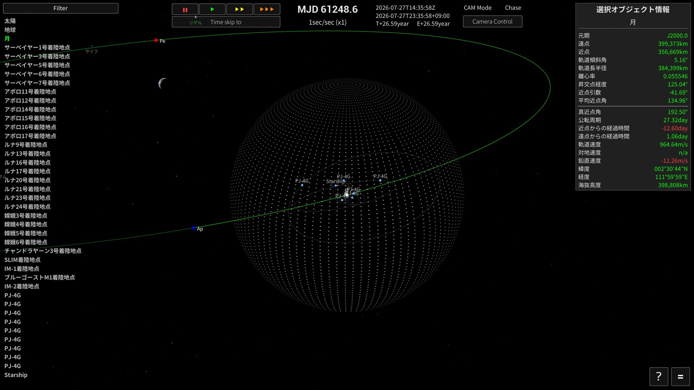
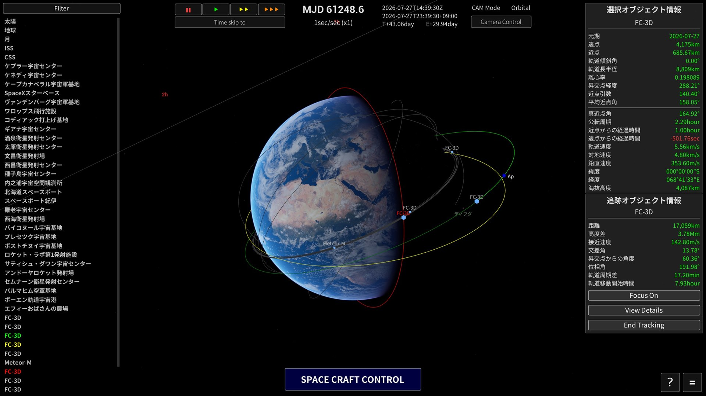
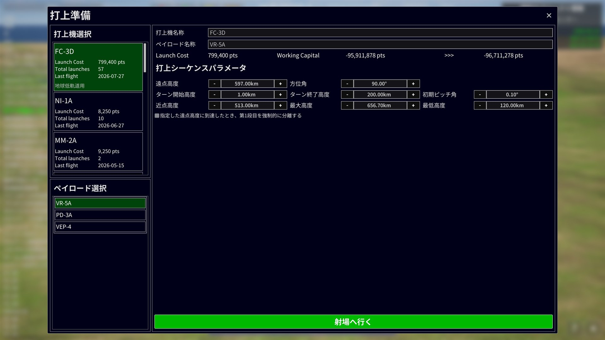
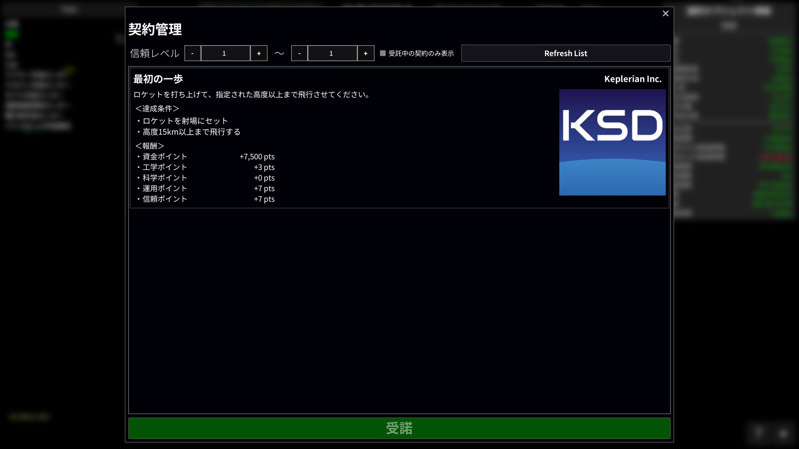
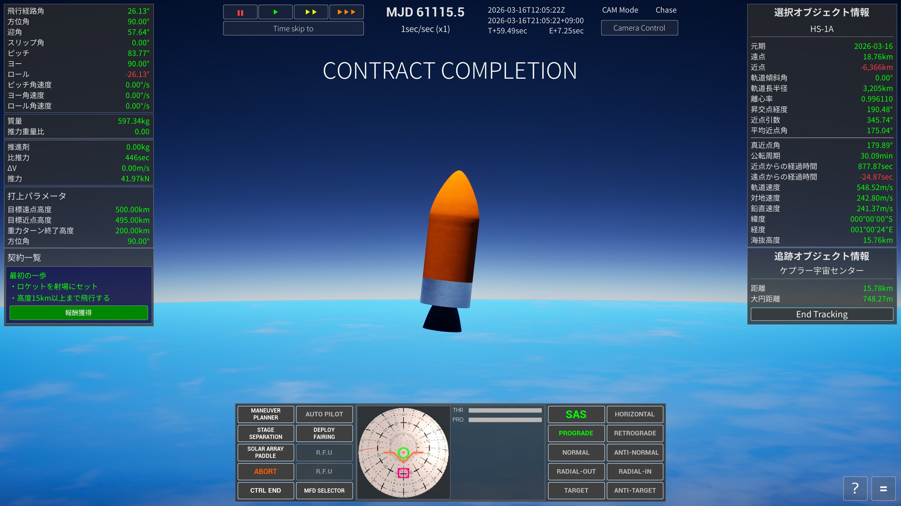
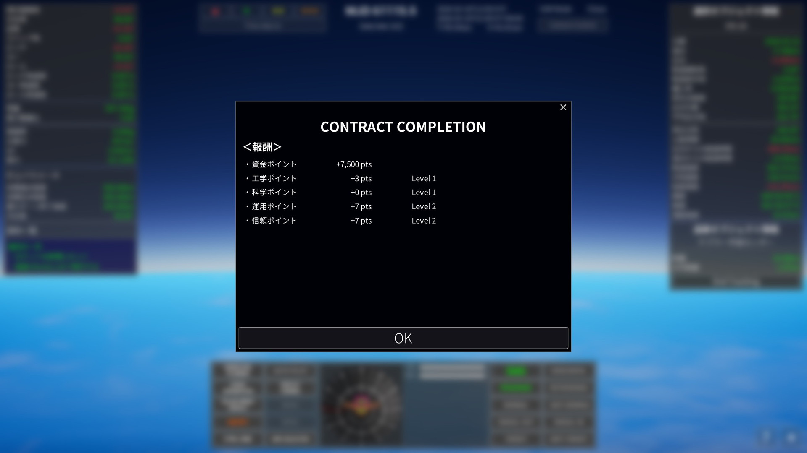

1. はじめに
『Keplerian Space Discovery』は、実在の太陽系と世界各地の実在する射場を舞台に、ロケットの組み立て・打ち上げ・軌道投入を行う宇宙飛行シミュレーションゲームです。天体と宇宙機の運動はケプラー軌道力学に基づいて計算されます。
2. クイックスタート
ニューゲームを開始すると、カメラ操作から最初のロケット打ち上げまでを案内するチュートリアルが始まります。画面上で次に操作する場所が示されるため、初めてプレイするときはチュートリアルに沿って進めることをおすすめします。
最初の目標
チュートリアルでは、契約「最初の一歩」を受注し、簡単なロケットを組み立てて高度15 kmへ到達します。主な流れは次のとおりです。
- カメラの回転・ズーム・平行移動・位置リセットを試します。
- 「契約管理」で契約「最初の一歩」を受注します。
- 「ロケット組立棟（VAB）」で、エンジン・タンク・ノーズコーンを組み合わせて機体を保存します。
- ケプラー宇宙センターを選択し、「打ち上げ準備」から機体を射点へ移動します。
- 「打ち上げ実行」で自動打ち上げを開始し、高度15 kmへ到達したら契約報酬を受け取ります。
ここまででゲームの基本的な流れは完了です。契約を達成して報酬を獲得し、新しい機体を開発しながら、より高い高度や周回軌道を目指しましょう。
3. メインスクリーン

天体／宇宙機選択
画面左側の項目をマウス左クリックすることで、注目選択の切り替えを行うことができます。
マウス中ボタンクリックで、対象をターゲットすることができます。
時間制御
・高度1km以上から時間加速を行うことができます。
・"||" は時間停止、"▶" は等倍速、"▶▶▶" は×10倍となります。
・"▶▶▶" は続けて押すことで、効果を重ねることができます。1回押すごとに×10倍され、3回押すと×1000倍になります。
・ただし状況ごとに倍率の上限があり、それを超える倍率にはなりません。たとえば大気圏内やエンジン噴射中は上限が×4なので、"▶▶▶" を押しても×4までしか上がりません。上限のルールは「時間加速のルール」を参照してください。
宇宙機操作パネル

操作可能な宇宙機を選択すると、宇宙機操作パネルが開きます。パネルではSAS（姿勢自動保持）、姿勢目標、ステージ分離など、飛行に必要な操作をまとめて行います。
宇宙機を直接操縦する場合は操縦モードへ切り替えます。スロットルや姿勢をキーボードで操作する方法は「手動操縦」、SAS の各モードは「SAS（姿勢自動保持）」を参照してください。
選択オブジェクト情報
画面右上には、現在選択している天体・宇宙機・地上施設の情報が表示されます。選択オブジェクトはカメラの注目先となり、宇宙機を選択した場合は飛行操作や時間加速上限の基準にもなります。
天体や軌道上のオブジェクトでは、遠点・近点、軌道長半径、離心率、軌道傾斜角、公転周期、速度などの軌道情報を確認できます。地上付近では緯度・経度・海抜高度、宇宙機では飛行状態に応じた速度や高度なども表示されます。表示項目はオブジェクトの種類によって異なります。
追跡オブジェクト情報
追跡対象を指定すると、画面右下に選択オブジェクトとの相対情報が表示されます。距離、高度差、接近速度、交差角、位相角などを使って、ランデブーや接近状況を確認できます。計算できない項目は n/a と表示されます。
また、各ボタンの機能は以下の通りです。
| 注視する | 追跡対象へ注目先を切り替えます。 |
| 詳細を表示 | 追跡対象の詳細情報を開きます。 |
| 追跡を終了 | 現在の追跡を終了します。 |
天体／宇宙機をマウス中ボタンクリックするか O キーで追跡を開始できます。
Filter
Object Selector 上部の Filter を開くと、宇宙機や地上施設など、天体以外のオブジェクトを一覧から選んで表示・非表示にできます。非表示にしたオブジェクトは Object Selector と画面上のマーカーから除外され、設定はセーブデータに保存されます。
ゲーム進行上まだ利用できないオブジェクトや、打ち上げ予定時刻に達していないオブジェクトは、フィルターの対象一覧に表示されません。
Camera Controls
画面上部の Camera Control からカメラ設定を開けます。基本操作は、右ドラッグで回転、中ドラッグで平行移動、ホイールで接近・後退です。V キー（または中ボタン＋右ボタン）でカメラモードを切り替えます。
| モード | 説明 |
|---|---|
| Chase | 選択オブジェクトを基準に追従する通常のカメラです。 |
| Free | カメラの向きやロールを自由に調整できます。 |
| Orbital | 軌道全体を確認しやすい距離と向きに切り替えます。地上施設の選択中は使用できません。 |
Home / End でも接近・後退、I / K / J / L でも回転できます。Page Up / Page Down は画角、Insert / Delete は露出を調整します。全操作は「Control Keys」を参照してください。
NavBall の見方
NavBall は、宇宙機の姿勢と基準方向を球面上に表示します。Prograde は進行方向、Retrograde はその反対、Normal / Antinormal は軌道面に垂直な方向、Radial-Out / Radial-In は親天体から見た真上／真下（Zenith / Nadir）を示します。Target / Antitarget は追跡対象の方向とその反対、Maneuver は設定した噴射方向です。
Prograde / Retrograde などの速度基準マーカーは、軌道投入前は対気速度基準、軌道投入後は慣性速度基準です。軌道投入の判定は、近点高度が親天体の大気圏界面（カーマンライン）を超えたときに行われます。この切り替えは SAS の姿勢目標および軌道線の表示基準と一致します。
各方向の用途は「SAS（姿勢自動保持）」を参照してください。
Map View
M キーで Map View（Orbital カメラ）へ切り替えると、選択オブジェクトの軌道全体を広い視野で確認できます。もう一度 M キーを押すと通常の Chase カメラへ戻ります。双曲線軌道では親天体の SOI を基準に表示範囲が決まり、地上施設を選択している間は Map View に切り替わりません。
Map View では、軌道の形、遠点・近点、他オブジェクトとの位置関係を確認しながら飛行計画を立てます。軌道投入前後で軌道線の表示基準が変わる点は「軌道線の見方」を参照してください。

軌道線の見方
画面には2種類の軌道線が表示されます。
・予定軌道 … 現在の位置と速度から計算した、これから飛ぶ経路。エンジン噴射中は加速に合わせて刻々と形が変わります。
・実績軌道 … 実際に通ってきた経路の記録（飛行の軌跡）。
軌道線の表示のしかたは、飛行の状態によって自動的に切り替わります。
| 状態 | 表示のしかた |
|---|---|
| 打ち上げ中・弾道飛行中（軌道投入前） | 地面に固定した表示。軌跡の根元は発射台に留まり続け、天体の自転を含めた対地の経路（このまま飛ぶとどこに落ちるか）が読み取れます。 |
| 軌道投入後 | 慣性空間に固定した表示。天体の自転に関係なく、軌道そのものの形（楕円）が表示されます。 |
切り替わるタイミングは「近点高度が大気圏界面（カーマンライン）を超えたとき」で、これは軌道投入の判定と同じです。NavBall の Prograde などのマーカーの基準も、これと同時に対気基準から慣性基準へ切り替わります。
複数のオブジェクトの軌道線が重なる場合は、色で対象を識別できます。

| 軌道線の色 | 対象 |
|---|---|
| 緑 | 現在選択している天体または宇宙機 |
| 黄 | 追跡オブジェクト |
| 赤 | 左側のオブジェクト一覧または画面上のマーカーに、ポインターを合わせているオブジェクト |
| その他 | 選択・追跡・ホバーのいずれにも該当しないオブジェクト |
SOI 表示
F3 キーで SOI（Sphere of Influence：重力圏）の表示を切り替えます。SOI は、宇宙機の軌道計算上、その天体を中心天体として扱う範囲です。
上の画面では月を選択しており、月を囲む点で構成された球が SOI、緑色の線が選択中の月の軌道を表しています。
宇宙機が現在の親天体の SOI を出ると、より上位の天体を中心とする軌道へ移ります。反対に、月や惑星など別の天体の SOI に入ると、その天体を中心とする軌道へ切り替わります。惑星間飛行や月遷移では、SOI の境界と予定軌道の接続を確認すると航路を把握しやすくなります。
4. ロケット組立棟（VAB）
ロケット組立棟（VAB）では、パーツを組み合わせて自分だけのロケットを設計・保存できます。

基本操作
パーツを配置する
・画面左の Parts Selector から、配置したいパーツをマウス左クリックで選びます。
・クリックしたらボタンを離し、マウスを動かして配置したい位置までドラッグします（クリックしたまま動かすのではありません）。
・目的の位置で再度クリックすると、その位置にパーツが確定配置されます。
・すでに配置されているパーツの近くに配置しようとすると、スナップして自動的に接続されます。
Parts Selector 上部の直径タブ（1.25m / 2.5m / 3.5m / 5.0m / 7.5m / 10.0m）を切り替えると、その直径に対応するパーツだけが一覧に表示されます。また、その下のプルダウン（Engine など）を切り替えることで、Tank・Fairing といったパーツ種別を切り替えられます。
配置済みパーツを移動する
配置済みのパーツも、新規配置と同じように左クリックで掴み、ボタンを離した状態で移動させ、もう一度左クリックすると位置が確定します。接続済みパーツを掴んだ場合は、そのパーツより先に接続されている子パーツもまとめて移動します。
パーツを接続する
移動中のパーツを別のパーツへ接触させると、そのパーツを親として自動的に接続されます。機体の中心軸付近へ配置すると中心線へスナップし、タンクやエンジンなどをまっすぐ揃えられます。
機体から切り離したままのパーツは有効な機体構成とみなされません。保存時には、ルートパーツから接続されている有効なパーツだけが保存されます。
パーツを削除する
パーツを左クリックで掴むと、画面右端に削除エリアが表示されます。掴んだパーツを削除エリアまで移動すると、そのパーツを削除できます。パーツを掴んでいる状態で Delete キーを押しても削除できます。

上部ツールバー
| ボタン | 説明 |
|---|---|
| Move Adjustment （トグル） | パーツをドラッグで移動させるときの、奥方向の距離の扱いを切り替えます。通常（OFF）は、パーツは掴んだときの奥方向の距離を保ったまま画面に沿って動きます。ONにすると、パーツの奥方向の距離が機体の中心軸上に揃えられた状態で移動するようになり、奥まった位置にあるパーツを機体中心付近へ寄せ直す操作がしやすくなります。 |
| AUTO ASSY （トグル） | ONの時は、パーツをクリックすると、今置かれているパーツの左側に自動で配置されます（最初のパーツは原点に配置されます）。OFFの時は、クリック後に自分でマウスドラッグして配置場所を決めます（上記の基本操作の通り）。 |
| New | 現在配置されているパーツをすべて削除し、新しいロケットの組み立てを開始します。 |
| Save | 組み立て中のロケットを保存します。 |
| Load | 保存したロケットを呼び出します。 |
| Texture | ロケットに貼り付ける画像（カスタムテクスチャ）を管理するダイアログを開きます。プレイヤーが自作した画像を登録しておき、閲覧・削除・追加ができます。 |
| x1～x6 | パーツを放射状に複数配置する数を切り替えます。ブースターなど側面パーツの配置に使います。x2以上に設定した状態で、貼り付け先パーツの側面にパーツを配置すると、貼り付け先パーツの中心軸を基準に、等間隔で複数個同時配置されます。配置後は複製されたパーツが1つのグループとして扱われます。 |
| Horizontal / Vertical （トグル） | 組み立て中のロケットの表示向きを切り替えます。Horizontalで水平配置、Verticalで垂直配置になります。 |
ステージ情報
画面下部の「Show Stage Information」を選択すると、現在の機体をステージごとに分けた性能情報が表示されます。インターステージを配置すると、その位置を境界としてステージが自動的に分けられます。もう一度ボタンを選択するとパネルを閉じます。

| 項目 | 説明 |
|---|---|
| PARTS | そのステージを構成するパーツ数です。 |
| COST | そのステージに含まれるパーツの合計費用です。 |
| DELTA-V | そのステージが発揮できる速度変化量の目安です。値が大きいほど、より大きく軌道を変更できます。 |
| ISP | エンジンの比推力です。推進剤をどれだけ効率よく推力へ変換できるかを秒単位で示します。 |
| THRUST | そのステージのエンジンが発生する合計推力です。 |
| MASS | そのステージ単体の質量と、そのステージが加速する上段を含めた合計質量を「ステージ質量 / 合計質量」で表示します。 |
| 推力重量比（TWR） | 推力が重量の何倍かを表します。第1段で1.0以下の場合は推力が重量を上回らず、地上から離床できません。 |
現行バージョンには、海面上と真空中の性能表示を切り替えるボタンはありません。
保存と読み込み
Save を選択すると、機体名と説明を入力して現在の機体を保存できます。読み込んだ機体を編集して保存した場合は、その機体の保存内容が更新されます。New から新しく組み立てた機体を保存すると、別の機体として登録されます。
Load を選択すると、保存済みの機体を一覧から選んでVABへ読み込めます。保存対象になるのは、ルートパーツから接続されている有効なパーツだけです。
Parts Editor
配置済みのパーツ上でマウスを右クリックすると、画面右側にParts Editorが表示されます。パーツの色、材質の見え方、表面模様、向きを編集できます。変更内容は画面上のパーツへすぐに反映され、機体を保存するとパーツごとの設定として保存されます。

| 項目 | 説明 |
|---|---|
| Copy Color | 現在のパーツの色と表面材質設定を一時的にコピーします。別のパーツへ同じ外観を適用するときに使用します。 |
| Paste Color | Copy Colorでコピーした色と表面材質設定を、編集中のパーツへ適用します。設定がコピーされていない間は選択できません。 |
| Metallic | 表面の金属らしさを調整します。値を大きくすると、周囲の光を金属のように反射する見え方になります。 |
| Roughness | 表面の粗さを調整します。値を小さくすると光沢が強くなり、値を大きくすると反射がぼやけた落ち着いた見え方になります。 |
| Unpainted / White / Black / Orange | 用意されている色のプリセットです。Unpaintedはパーツ本来の色へ戻します。 |
| Red / Green / Blue | 赤・緑・青の成分をスライダーで調整し、任意の表面色を作ります。 |
| Surface Texture | パーツ表面に重ねる画像を選択します。Noneでは画像を使用しません。上部ツールバーのTextureから登録したカスタムテクスチャも選択できます。 |
| Surface Normal Map | 表面の細かな凹凸表現を選択します。Flatでは凹凸を追加せず、その他の項目では形状を変えずに表面模様の陰影を加えます。 |
| Invert | パーツの前後方向を反転します。エンジンやノーズコーンなど、取り付け方向を逆にしたい場合に使用します。 |
| Edit End | 編集を終了してParts Editorを閉じます。 |
5. 打ち上げと飛行
打ち上げ準備
射場を選択して「打上準備」を開くと、使用する打上機とペイロードを選び、自動打ち上げの目標軌道と飛行経路を設定できます。

左側の一覧から打上機とペイロードを選択します。打上機の欄には打ち上げ費用、打ち上げ回数、最終飛行日が表示されます。画面上部では打上機名称とペイロード名称を変更でき、打ち上げ費用、現在の資金、打ち上げ後の資金を確認できます。現在のバージョンでは、打ち上げ後の資金がマイナスになる場合も打ち上げられます。
打上シーケンスパラメータ
自動打ち上げで使用する目標値を設定します。設定値は打上機ごとに保存され、次回同じ打上機を選択したときにも使用されます。
| 項目 | 説明 |
|---|---|
| 遠点高度 | 投入する軌道の目標遠点高度です。上昇中に予定軌道の遠点がこの高度へ達するとエンジンを停止し、遠点付近まで慣性飛行します。 |
| 近点高度 | 投入する軌道の目標近点高度です。遠点付近でエンジンを再点火し、近点がこの高度へ達するまで軌道を持ち上げます。 |
| 方位角 | 打ち上げ後に機体を倒していく水平方向です。北を0°、東を90°、南を180°、西を270°として指定します。射場の緯度と方位角によって、投入できる軌道傾斜角が決まります。 |
| ターン開始高度 | 重力ターンを開始する高度です。この高度まではほぼ鉛直に上昇し、到達すると方位角に合わせてロールした後、機体を徐々に倒し始めます。 |
| ターン終了高度 | 重力ターンを終える高度です。この高度へ向けて機体を徐々に水平へ近づけます。到達前に予定軌道の遠点が目標高度へ達した場合は、その時点で遠点調整へ移ります。 |
| 初期ピッチ角 | 重力ターン開始時に、鉛直姿勢から機体を倒し始める角度です。0°に近いほど鉛直に近い姿勢から緩やかにターンを開始し、値を大きくすると早い段階から強く機体を傾けます。 |
| 最大高度 | 近点調整中に許容する遠点高度の上限です。遠点がこの値を超え、同時に近点が「最低高度」を超えた場合は、「近点高度」の目標へ届いていなくてもエンジンを停止して軌道投入を完了します。 |
| 最低高度 | 「最大高度」と組み合わせて使う、軌道投入完了を許可する近点高度の下限です。通常の目標近点高度は「近点高度」で指定します。 |
| 第1段強制分離 | 「指定した遠点高度に到達したとき、第1段目を強制的に分離する」を有効にすると、推進剤が残っている場合でも、予定軌道の遠点が指定高度へ達した時点で第1段を分離します。 |
設定が終わったら「射場へ行く」を選択します。選択した打上機とペイロードが射点へ配置され、打ち上げ実行画面へ進みます。
自動打ち上げ
打ち上げは、目標軌道を指定するだけで軌道投入まで自動で行われます。シーケンスは実際のロケットと同じ流れで進みます。
| フェーズ | 内容 |
|---|---|
| 1. リフトオフ | エンジン点火。推力が機体重量を上回った瞬間に発射台を離れます。 |
| 2. 垂直上昇 | 高度約1kmまでまっすぐ上昇します。 |
| 3. ロール（方位角合わせ） | 機体をロールさせ、打ち上げ方位角に機体の向きを合わせます。 |
| 4. 重力ターン | 高度が上がるにつれて機体を徐々に倒し、水平方向への加速に移っていきます。 |
| 5. 遠点調整・MECO | 遠点（Ap）が目標高度に達したらメインエンジンをカットし、続いて段分離を行います。 |
| 6. 慣性飛行 | 遠点付近まで惰性で上昇します。この間は時間加速が自動で入り、再点火が近づくと自動で等倍に戻ります。 |
| 7. 再点火・近点調整 | 遠点の少し手前でエンジンを再点火し、近点（Pe）を目標高度まで持ち上げて軌道を円くします。 |
| 8. 軌道投入完了 | 近点が目標高度に達したらエンジンカット。打ち上げシーケンス終了です。 |
このほか、飛行中には次のイベントが自動で実行されます。
・ブースター分離 … ブースターの推進剤を使い切ったタイミングで分離します。
・フェアリング分離 … 大気圏を抜けた高度100km付近で分離します。
自動打ち上げ中も、時間加速の変更やカメラ操作は自由に行えます。分離や再点火などの見どころの直前には、時間加速は自動的に等倍へ戻ります。
手動操縦
宇宙機を選択して操縦モードにすると、キーボードで直接操縦できます。
| 操作 | キー | 説明 |
|---|---|---|
| スロットル増減 | Left Shift / Left Ctrl | 推力を少しずつ上げ下げします。 |
| スロットル最大 | Z | 推力を一気に100%にします。 |
| スロットルカット | X | 推力を0にします（エンジンカット）。 |
| ピッチ | W / S | 機首を上下に向けます。 |
| ヨー | A / D | 機首を左右に向けます。 |
| ロール | Q / E | 機体軸まわりに回転させます。 |
| ステージ分離 | Space | 次のステージを切り離します。 |
姿勢変更の応答は機体の慣性モーメントと推力によって決まります。重い機体や推力の小さい上段では、姿勢がゆっくりとしか変わらない点に注意してください。
SAS（姿勢自動保持）
SAS を使うと、指定した方向へ機体の姿勢を自動で向け続けることができます。以下のモードがあります。
| モード | 向く方向 |
|---|---|
| Prograde（順行） | 進行方向。加速して軌道を上げるときに使います。 |
| Retrograde（逆行） | 進行方向の反対。減速して軌道を下げるときに使います。 |
| Normal（法線） | 軌道面に垂直な方向。軌道傾斜角を変えるときに使います。 |
| Antinormal（反法線） | Normal の反対方向。 |
| Zenith（天頂） | 親天体の中心から遠ざかる方向（真上）。 |
| Nadir（天底） | 親天体の中心へ向かう方向（真下）。 |
| Target | ターゲットに指定したオブジェクトの方向。 |
| Antitarget | ターゲットの反対方向。 |
| Maneuver | 設定したマニューバの噴射方向。 |
Prograde / Retrograde などの速度基準の方向は、軌道投入前は対気速度（大気に対する速度）基準、軌道投入後は慣性速度基準に自動で切り替わります。これは NavBall のマーカー表示と常に一致します。
時間加速のルール
時間加速の上限は、選択中の宇宙機の高度と飛行状態によって自動的に決まります。上から順に判定され、最初に当てはまったものが適用されます。
| 状態 | 上限倍率 |
|---|---|
| 他の宇宙機が200m以内にいるとき | ×1（等倍のみ） |
| 他の宇宙機が1km以内にいるとき | ×4まで |
| 高度1km未満（打ち上げ中を除く） | ×1（等倍のみ） |
| 高度1km〜大気圏内、またはエンジン噴射中 | ×4まで |
| 大気圏を十分に離れ、噴射していないとき | 軌道周期に応じて自動算出（およそ10秒で軌道を1周する倍率まで） |
・上限を超える倍率を設定していた場合は、自動的に上限まで引き下げられます。
・接地や宇宙機どうしの接触は等倍でのみ判定されるため、低高度や接近中は上限が下がります。打ち上げ中は接触の判定対象外なので、離昇直後から×4まで加速できます。
・自動打ち上げ中は、フェーズに応じた倍率が自動で設定されます（重力ターン中×2、遠点調整中×4、慣性飛行中は最大×60など）。手動で倍率を変更した場合はそちらが優先されます。
・ステージ分離・フェアリング分離・再点火などの直前には、見逃さないよう自動的に等倍へ戻ります。
6. 契約
契約は、指定された飛行やミッションを達成して報酬を獲得するための目標です。獲得した資金や各種ポイントを使って組織を成長させ、より高度なミッションへ進みます。

契約を受諾する
- 画面右下のメニューを開き、「契約管理」を選択します。
- 「契約一覧」から、内容を確認したい契約を選択します。
- 契約の説明、「達成条件」、「報酬」を確認します。
- 「受諾」を選択すると、その契約が受託中になります。
「受託中の契約のみ表示」を有効にすると、現在進行中の契約だけを確認できます。受託を取りやめる場合は、対象の契約を選択して「契約解除」を選びます。
達成条件と完了
受託中の契約は、飛行中を含めて達成状況が自動的に判定されます。複数の達成条件がある契約では、すべての条件を満たす必要があります。
契約を達成すると完了画面が表示されます。「報酬獲得」を選択して結果を確認してください。最初の契約「最初の一歩」では、ロケットを射点に配置し、高度15 km以上へ到達することが目標です。

「報酬獲得」を選択すると、獲得した各ポイントと現在のレベルが表示されます。内容を確認し、「OK」を選択して画面を閉じます。

報酬
契約ごとに、次の報酬が設定されています。報酬が0ポイントの項目もあります。
| 報酬 | 主な役割 |
|---|---|
| 資金ポイント | 打ち上げ時に費用として使用します。機体の製作自体には必要ありません。 |
| 工学ポイント | 工学レベルを上げ、より高度な部品を利用するために必要です。 |
| 科学ポイント | 科学レベルを上げ、一部の部品や対象を利用可能にするために必要です。 |
| 運用ポイント | 運用レベルを上げます。運用レベルが上がると、表示される射場が増えていきます。 |
| 信頼ポイント | 信頼レベルを上げます。信頼レベルが上がると、選択できる契約の種類が増えます。 |
7. 軌道の基礎知識
ケプラー軌道要素
宇宙機や天体の軌道は、6つの数値の組「ケプラー軌道要素」で表されます。このゲームのタイトルの由来であり、ゲーム内のあらゆる軌道情報の基礎です。6つの要素は、役割ごとに3つのグループに分けると理解しやすくなります。
| 要素 | 意味 |
|---|---|
| 軌道の形と大きさ | |
| 軌道長半径 a (Semi-major Axis) | 軌道の大きさ。楕円の長い方の径の半分です。値が大きいほど高い軌道になり、公転周期もこの値で決まります。 |
| 離心率 e (Eccentricity) | 軌道のつぶれ具合。0 で完全な円、0〜1 で楕円になります。1 以上になると軌道は閉じず、親天体の重力圏から脱出していきます。 |
| 軌道面の向き | |
| 軌道傾斜角 i (Inclination) | 赤道面に対する軌道面の傾き。0°は赤道上空を回る軌道、90°は北極・南極の上空を通る極軌道です。90°を超えると、天体の自転と逆向きに回る逆行軌道になります。 |
| 昇交点経度 Ω (Longitude of the Ascending Node) | 軌道が赤道面を南から北へ横切る点（昇交点）が、基準方向から測ってどの方角にあるか。傾いた軌道面がどちらを向いているかを決めます。 |
| 近点引数 ω (Argument of Periapsis) | 昇交点から軌道に沿って測って、近点がどの位置に来るか。軌道面の中での楕円の向きを決めます。 |
| 軌道上の位置 | |
| 平均近点角 M (Mean Anomaly) | 軌道1周のうち、今どこにいるかを表す角度。時間とともに一定の割合で増えていき、360°で1周です。 |
・遠点（Ap）・近点（Pe）の高度は、軌道長半径 a と離心率 e から決まります。自動打ち上げの目標軌道も遠点・近点高度で指定します。
・打ち上げでそのまま入れられる軌道傾斜角は、射場の緯度が下限です。低緯度の射場ほど狙える軌道の自由度が高くなります。
・東向きの打ち上げでは天体の自転速度がそのまま加速のボーナスになります（地球の赤道で約465 m/s）。多くの射場が東側に海が開けた場所にあるのはこのためです。
8. リファレンス
Control Keys
| 操作 | キーボード | マウス | ゲームパッド |
|---|---|---|---|
| カメラ回転 | I/K/J/L | 右ボタン＋ドラッグ | 右スティック |
| カメラ平行移動 | - | 中ボタン＋ドラッグ | - |
| カメラ接近・後退 | Home/End | ホイール | L/R トリガー |
| カメラ画角 | Page Up/Down | - | - |
| カメラ露出 | Insert/Delete | - | - |
| カメラモード切り替え | V | 中ボタン＋右ボタン | Back ボタン |
| カメラの向き *1 | - | 左ボタン＋ドラッグ | - |
| カメラロール *1 | Q/E | - | L/R ショルダー |
| カメラリセット | - | 左ボタン＋右ボタン | 右スティック押し込み |
| Map View | M | - | - |
| UI 表示／非表示 | F2 | - | - |
| SOI 表示／非表示 | F3 | - | - |
| クイックセーブ | F5 | - | - |
| クイックロード | F9 | - | - |
| 追跡開始 | O | 一覧上で右クリック | Y ボタン |
| メニューを開く | ESC | - | Start ボタン |
| 宇宙機操作パネルを開く *2 | C | - | X ボタン |
| スロットル最大 *3 | Z | - | - |
| スロットルカット *3 | X | - | - |
| スロットル増加 *3 | Left Shift | - | - |
| スロットル減少 *3 | Left Ctrl | - | - |
| ステージ分離 *3 | Space | - | - |
| ロール *3 | Q/E | - | - |
| ピッチ *3 | W/S | - | - |
| ヨー *3 | A/D | - | - |
| デバッグコンソール | ALT + F12 | - | - |
*1 : カメラモードが「Chase」以外のとき。
*2 : 宇宙機を選択しているときのみ。
*3 : 宇宙機操縦モードのときのみ。
射場一覧
ゲーム内で利用できる射場の一覧です。設立日と緯度・経度は、ゲーム内データに登録されている値を示しています。
| 射場名 | 設立日 | 緯度 | 経度 | 備考 |
|---|---|---|---|---|
| ケプラー宇宙センター | 1950/01/01 | 北緯 0.00° | 東経 1.00° | ゲーム内にのみ登場する架空の宇宙センター。 |
| ケネディ宇宙センター | 1962/07/01 | 北緯 28.52° | 西経 80.65° | 月探査、スペースシャトル、有人宇宙飛行の拠点として使われてきた大型射場。 |
| ケープカナベラル宇宙軍基地 | 1950/07/24 | 北緯 28.49° | 西経 80.58° | 初期の宇宙開発から現在まで、多様なロケットの打ち上げに使われている大規模射場。 |
| SpaceXスターベース | 2002/05/06 | 北緯 26.00° | 西経 97.15° | StarshipとSuper Heavyの開発・製造・試験・打ち上げを行う専用拠点。 |
| ヴァンデンバーグ宇宙軍基地 | 1941/01/01 | 北緯 34.73° | 西経 120.56° | 南側に外洋が開け、極軌道や太陽同期軌道への打ち上げに適した射場。 |
| ワロップス飛行施設 | 1945/01/01 | 北緯 37.94° | 西経 75.46° | 観測ロケット、科学気球、小型軌道ミッションなどを扱う研究・試験拠点。 |
| コディアック打上げ基地 | 1998/01/01 | 北緯 57.44° | 西経 152.34° | 高緯度軌道や極軌道への打ち上げに適した、海に囲まれた射場。 |
| ギアナ宇宙センター | 1964/04/14 | 北緯 5.23° | 西経 52.76° | 赤道に近く、地球の自転を生かした静止トランスファ軌道への打ち上げに有利な射場。 |
| 酒泉衛星発射センター | 1958/01/01 | 北緯 40.95° | 東経 100.29° | 有人宇宙船や低軌道衛星の打ち上げで知られる内陸の射場。 |
| 太原衛星発射センター | 1966/01/01 | 北緯 38.84° | 東経 111.60° | 極軌道や太陽同期軌道への衛星打ち上げを多く担う内陸の射場。 |
| 文昌衛星発射場 | 2014/10/18 | 北緯 19.61° | 東経 110.95° | 低緯度の海沿いにあり、大型ロケットや深宇宙ミッションに使われる射場。 |
| 西昌衛星発射センター | 1982/01/01 | 北緯 28.24° | 東経 102.02° | 静止トランスファ軌道の衛星や月・惑星探査機の打ち上げに使われる射場。 |
| 種子島宇宙センター | 1969/10/01 | 北緯 30.40° | 東経 130.98° | 大型ロケットの組み立て・試験・打ち上げ設備を備える海沿いの射場。 |
| 内之浦宇宙空間観測所 | 1963/12/09 | 北緯 31.25° | 東経 131.07° | 科学観測ロケット、科学衛星、探査機の打ち上げと追跡を行う山間の射場。 |
| 北海道スペースポート | 2021/04/20 | 北緯 42.50° | 東経 143.44° | 民間利用に開かれ、観測ロケットや将来の軌道打ち上げを支援する商業宇宙港。 |
| スペースポート紀伊 | 2021/01/01 | 北緯 33.54° | 東経 135.89° | 小型固体燃料ロケットKAIROSの打ち上げ拠点として建設された専用射場。 |
| 羅老宇宙センター | 2009/06/11 | 北緯 34.43° | 東経 127.53° | NaroやNuriなどのロケット開発・打ち上げに使われる海沿いの宇宙センター。 |
| 西海衛星発射場 | 2012/03/01 | 北緯 39.66° | 東経 124.71° | 人工衛星打ち上げ設備と大型ロケット試験設備を備える海沿いの射場。 |
| バイコヌール宇宙基地 | 1955/06/02 | 北緯 45.96° | 東経 63.30° | 世界初の人工衛星と初の有人宇宙飛行を送り出した、歴史の長い宇宙基地。 |
| プレセツク宇宙基地 | 1957/07/15 | 北緯 62.92° | 東経 40.57° | 高緯度に位置し、極軌道や高傾斜角軌道への打ち上げに適した宇宙基地。 |
| ボストチヌイ宇宙基地 | 2011/08/01 | 北緯 51.88° | 東経 128.33° | ソユーズやアンガラなどの打ち上げに対応する、比較的新しい宇宙基地。 |
| ロケット・ラボ第1発射施設 | 2016/09/26 | 南緯 39.26° | 東経 177.87° | Electronロケットを運用し、小型衛星の高頻度打ち上げを想定した民間射場。 |
| サティシュ・ダワン宇宙センター | 1971/10/09 | 北緯 13.71° | 東経 80.23° | PSLV、GSLV、LVM3などを運用し、複数の発射台を備える大型宇宙センター。 |
| アンドーヤロケット発射場 | 1962/08/18 | 北緯 69.29° | 東経 16.02° | 観測ロケットや大気・オーロラ観測で実績を持ち、軌道打ち上げ設備も備える射場。 |
| セムナーン衛星発射センター | 2006/11/02 | 北緯 35.23° | 東経 53.92° | 小型衛星打ち上げ用ロケットの発射と試験に使われる内陸の射場。 |
| パルマヒム空軍基地 | 1988/09/19 | 北緯 31.90° | 東経 34.69° | 西側の海上へ向けて打ち上げるため、逆行軌道への投入で知られる射場。 |
| エフィーおばさんの農場 | 1926/03/16 | 北緯 42.22° | 西経 71.81° | 射場ではなく、ロバート・ゴダードが1926年に世界初の液体燃料ロケットを打ち上げた試験地。 |
用語集
マニュアルおよびゲーム内で使用する主な用語です。
| 用語 | 意味 |
|---|---|
| 軌道・飛行 | |
| 遠点（Ap / Apoapsis） | 軌道上で親天体から最も遠い点です。打ち上げ時は、上昇中の加速によって予定軌道の遠点高度を目標まで持ち上げます。 |
| 近点（Pe / Periapsis） | 軌道上で親天体に最も近い点です。遠点付近で加速して近点を大気圏外まで持ち上げると、安定した周回軌道になります。 |
| ケプラー軌道要素 | 軌道の大きさ、形、向き、軌道上の位置を表す6つの数値です。詳しくは「ケプラー軌道要素」を参照してください。 |
| 軌道長半径（a） | 軌道の大きさを表す値です。楕円の長い方の径の半分に相当し、公転周期にも影響します。 |
| 離心率（e） | 軌道のつぶれ具合を表す値です。0で円、0より大きく1未満で楕円、1以上では閉じない脱出軌道になります。 |
| 軌道傾斜角（i） | 親天体の赤道面に対する軌道面の傾きです。0°は赤道軌道、90°は極軌道です。 |
| 昇交点経度（LAN / Ω） | 軌道が赤道面を南側から北側へ横切る昇交点の方向を表し、軌道面がどちらを向くかを決めます。 |
| 近点引数（ω） | 昇交点から近点までを軌道に沿って測った角度です。軌道面内で楕円がどちらを向くかを決めます。 |
| 平均近点角（M） | 天体や宇宙機が軌道1周のどの位置にいるかを時間に対応させて表す角度です。 |
| SOI（Sphere of Influence） | 軌道計算上、その天体の重力を中心として扱う範囲です。別の天体のSOIへ入ると、軌道の親天体が切り替わります。 |
| カーマンライン | 大気圏と宇宙空間の境界として扱う高度です。本ゲームでは、近点高度が親天体のカーマンラインを超えると軌道投入済みと判定します。 |
| 軌道投入 | 宇宙機を親天体の周囲を回り続けられる軌道へ入れることです。本ゲームでは、近点高度がカーマンラインを超えた状態を指します。 |
| 弾道飛行 | 軌道投入前に、推力を停止した宇宙機が重力に従って飛行している状態です。このままでは親天体へ落下します。 |
| 慣性飛行 | エンジンを停止し、宇宙機が速度と重力によって飛行する区間です。自動打ち上げでは、遠点調整後から再点火までの間を指します。 |
| 重力ターン | 上昇しながら機体を徐々に倒し、重力を利用して鉛直上昇から水平方向の加速へ滑らかに移る打ち上げ方法です。 |
| 方位角 | 水平面上の進行方向を表す角度です。本ゲームの打ち上げ設定では、北が0°、東が90°、南が180°、西が270°です。 |
| 円軌道化 | 遠点付近で順行方向へ加速し、近点を持ち上げて遠点高度との差を小さくする操作です。 |
| ランデブー | 軌道上で別の宇宙機や対象へ接近し、位置と速度を合わせることです。 |
| ΔV（デルタV） | 宇宙機が推進剤を使って発揮できる速度変化量、または軌道変更に必要な速度変化量です。値が大きいほど大きな軌道変更ができます。 |
| 慣性速度 / 対気速度 | 慣性速度は宇宙空間を基準とする速度、対気速度は自転する大気に対する速度です。打ち上げ中の空力とNavBallは対気速度、軌道計算は慣性速度を基準にします。 |
| 機体 | |
| 推力（Thrust） | エンジンが宇宙機を加速させる力です。地上から離床するには、機体に働く重力を上回る推力が必要です。 |
| 比推力（Isp） | エンジンが推進剤をどれだけ効率よく推力へ変換できるかを秒単位で表す指標です。値が大きいほど効率のよいエンジンです。 |
| 推力重量比（TWR） | 機体重量に対する推力の比率です。地上で1.0以下の場合、推力が重量を上回らないため離床できません。 |
| ステージ | ロケットを飛行中に切り離して使用する単位です。使用済みのエンジンやタンクを分離すると、残った機体を軽くできます。 |
| ブースター | 主に打ち上げ初期の推力を補うため、機体側面などへ追加する補助推進段です。推進剤を使い切ると分離します。 |
| デカプラ | ステージ同士を接続し、飛行中に切り離すためのパーツです。VABではデカプラの位置を境界としてステージが分けられます。 |
| フェアリング | 打ち上げ中の空気抵抗や加熱からペイロードを保護する覆いです。大気圏を抜けると分離します。 |
| ペイロード | ロケットで運ぶ人工衛星、探査機などの搭載物です。 |
| MECO | Main Engine Cut Offの略で、メインエンジンの燃焼停止を指します。自動打ち上げでは、予定軌道の遠点が目標高度へ達したときに行われます。 |
| Max Q | 飛行中の動圧が最大になる点です。大気密度と対気速度による機体への空力負荷が最も大きくなります。 |
| 画面・操作 | |
| NavBall | 宇宙機の姿勢と、進行方向、軌道面、ターゲットなどの基準方向を球面上に示す計器です。 |
| SAS | 指定した方向へ宇宙機の姿勢を自動的に向け続ける姿勢保持機能です。 |
| Prograde / Retrograde | Progradeは進行方向、Retrogradeはその反対方向です。順行方向へ加速すると軌道が上がり、逆行方向へ加速すると軌道が下がります。 |
| Normal / Antinormal | 軌道面に垂直な方向とその反対方向です。この方向へ加速すると軌道傾斜角を変更できます。 |
| Zenith / Nadir | 親天体の中心から遠ざかる真上方向と、親天体の中心へ向かう真下方向です。 |
| Target / Antitarget | 追跡対象へ向かう方向と、その反対方向です。 |
| Maneuver | 設定した軌道変更の噴射方向です。NavBallとSASで目標方向として使用できます。 |
| Map View | 選択オブジェクトの軌道全体、遠点・近点、他オブジェクトとの位置関係を確認する表示です。 |
| 時間加速 | ゲーム内時間の進行を速める機能です。利用できる最大倍率は高度や飛行状態によって変わります。 |